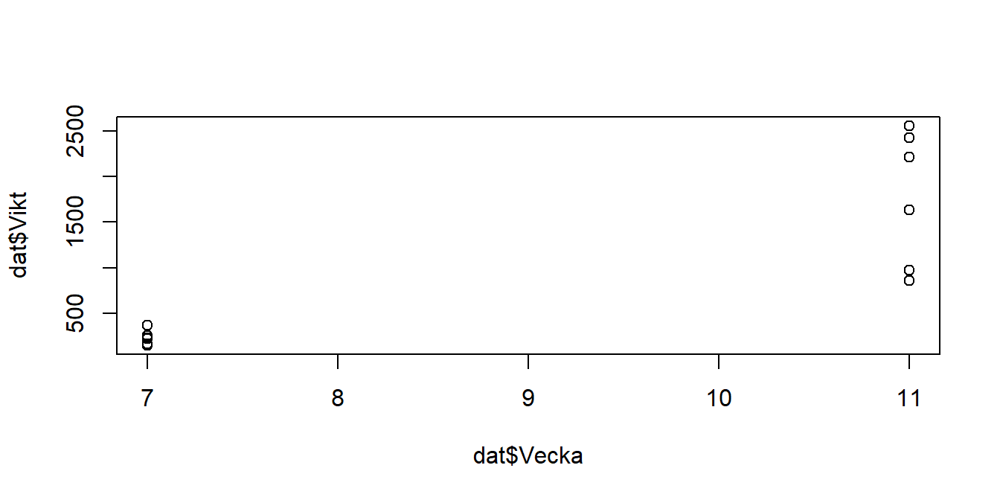
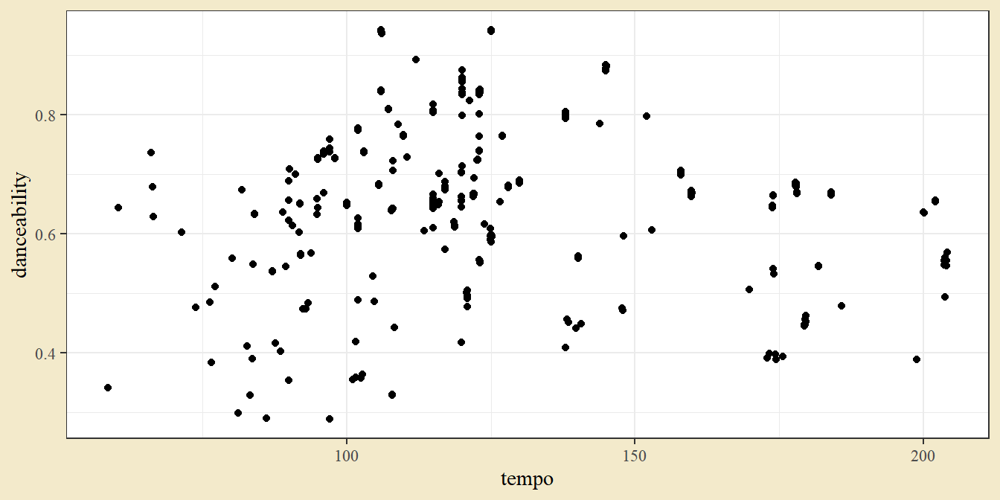

Kapitel 5 Beskrivande statistik
R och dess tilläggspaket innehåller funktioner för att sammanfatta och illustrera en datamängd. Detta avsnitt behandlar funktioner för att filtrera ut intressanta observationer, välja ut intressanta variabler, beräkna sammanfattande mått (som medelvärde, median och standardavvikelse), och konstruera och tolka grafer.
5.1 Datamängd
Som exempel används data från Gapminder - en stiftelse med mål att sprida information om ekonomisk utveckling och hälsa, grundad av Hans Rosling (1948-2017). Datamängden finns tillgänglig i R-paketet gapminder.
install.packages("gapminder") # Behöver bara köras första gången
library(gapminder)Efter att paketet laddas med library(gapminder) är datan tillgänglig under namnet gapminder. Man kan skriva ut de första raderna genom
gapminder## # A tibble: 1,704 × 6
## country continent year lifeExp pop gdpPercap
## <fct> <fct> <int> <dbl> <int> <dbl>
## 1 Afghanistan Asia 1952 28.8 8425333 779.
## 2 Afghanistan Asia 1957 30.3 9240934 821.
## 3 Afghanistan Asia 1962 32.0 10267083 853.
## 4 Afghanistan Asia 1967 34.0 11537966 836.
## 5 Afghanistan Asia 1972 36.1 13079460 740.
## 6 Afghanistan Asia 1977 38.4 14880372 786.
## 7 Afghanistan Asia 1982 39.9 12881816 978.
## 8 Afghanistan Asia 1987 40.8 13867957 852.
## 9 Afghanistan Asia 1992 41.7 16317921 649.
## 10 Afghanistan Asia 1997 41.8 22227415 635.
## # … with 1,694 more rowsDatan anger förväntad medellivslängd, populationsstorlek och bnp per capita, per land och år (vart femte år från 1952 till 2007).
5.2 Filtrering av rader och selektion av kolumner
En vanlig operation på en tabell är att göra ett urval - antingen ett urval av rader (t.ex. ett visst land eller år), vilket kallas filtrering eller ett urval av variabler (t.ex. år och population), vilket kallas selektion.
Det finns flera olika sätt att göra ett urval i R.
Det traditionella sättet är att använda index inom hakparenteser (t.ex. gapminder[4, 2] för fjärde raden, andra kolumnen) eller dollartecken för specifika kolumner (t.ex. gapminder$pop för befolkningskolumnen).
Här fokuseras dock på hur det kan göras med funktionerna filter och select från paketet tidyverse.
För att filtrera på ett givet land kan använda pipe-funktionen från datan till en filter-funktion, t.ex.
gapminder %>% # Ta gapminder-datan och sen
filter(country == "Sweden") # filtrera för specifikt land## # A tibble: 12 × 6
## country continent year lifeExp pop gdpPercap
## <fct> <fct> <int> <dbl> <int> <dbl>
## 1 Sweden Europe 1952 71.9 7124673 8528.
## 2 Sweden Europe 1957 72.5 7363802 9912.
## 3 Sweden Europe 1962 73.4 7561588 12329.
## 4 Sweden Europe 1967 74.2 7867931 15258.
## 5 Sweden Europe 1972 74.7 8122293 17832.
## 6 Sweden Europe 1977 75.4 8251648 18856.
## 7 Sweden Europe 1982 76.4 8325260 20667.
## 8 Sweden Europe 1987 77.2 8421403 23587.
## 9 Sweden Europe 1992 78.2 8718867 23880.
## 10 Sweden Europe 1997 79.4 8897619 25267.
## 11 Sweden Europe 2002 80.0 8954175 29342.
## 12 Sweden Europe 2007 80.9 9031088 33860.Inom filter-funktionen anges ett logisk villkor country == "Sweden" och utfallet är de rader där villkoret är sant. Notera de dubbla likhetstecknen - de måste användas för ett logisk villkor eftersom enkelt likhetstecken används för att skapa objekt och sätta funktionsargument. Om man vill välja flera länder kan man använda funktionen %in% på ett liknande sätt.
gapminder %>%
filter(country %in% c("Sweden", "Denmark"))## # A tibble: 24 × 6
## country continent year lifeExp pop gdpPercap
## <fct> <fct> <int> <dbl> <int> <dbl>
## 1 Denmark Europe 1952 70.8 4334000 9692.
## 2 Denmark Europe 1957 71.8 4487831 11100.
## 3 Denmark Europe 1962 72.4 4646899 13583.
## 4 Denmark Europe 1967 73.0 4838800 15937.
## 5 Denmark Europe 1972 73.5 4991596 18866.
## 6 Denmark Europe 1977 74.7 5088419 20423.
## 7 Denmark Europe 1982 74.6 5117810 21688.
## 8 Denmark Europe 1987 74.8 5127024 25116.
## 9 Denmark Europe 1992 75.3 5171393 26407.
## 10 Denmark Europe 1997 76.1 5283663 29804.
## # … with 14 more rowsoch om man vill ha mer än ett villkor kan man rada dem i filter-funktionen eller ha flera filter-steg:
gapminder %>%
filter(country %in% c("Sweden", "Denmark"),
year == 1987)## # A tibble: 2 × 6
## country continent year lifeExp pop gdpPercap
## <fct> <fct> <int> <dbl> <int> <dbl>
## 1 Denmark Europe 1987 74.8 5127024 25116.
## 2 Sweden Europe 1987 77.2 8421403 23587.alternativt
gapminder %>%
filter(country %in% c("Sweden", "Denmark")) %>%
filter(year == 1987)## # A tibble: 2 × 6
## country continent year lifeExp pop gdpPercap
## <fct> <fct> <int> <dbl> <int> <dbl>
## 1 Denmark Europe 1987 74.8 5127024 25116.
## 2 Sweden Europe 1987 77.2 8421403 23587.Om man istället vill göra ett urval av kolumner kan man använda select. Som argument anges de kolumner man vill välja, t.ex.
gapminder %>%
select(country, pop)## # A tibble: 1,704 × 2
## country pop
## <fct> <int>
## 1 Afghanistan 8425333
## 2 Afghanistan 9240934
## 3 Afghanistan 10267083
## 4 Afghanistan 11537966
## 5 Afghanistan 13079460
## 6 Afghanistan 14880372
## 7 Afghanistan 12881816
## 8 Afghanistan 13867957
## 9 Afghanistan 16317921
## 10 Afghanistan 22227415
## # … with 1,694 more rowsSom avslutning ges ett lite mer komplicerat exempel på ett urval av land, kontinent och befolkning för länder utanför Europa som 2002 hade en befolkning över 100 miljoner
gapminder %>% # Ta datan och sen
filter(continent != "Europe", # filtrera på kontinent ej lika med (!=) Europa,
year == 2002, # år lika med 2002,
pop > 100000000) %>% # befolkning över 100 mil, och sen
select(country, continent, pop) # selektera på land, kontinent och befolkning## # A tibble: 10 × 3
## country continent pop
## <fct> <fct> <int>
## 1 Bangladesh Asia 135656790
## 2 Brazil Americas 179914212
## 3 China Asia 1280400000
## 4 India Asia 1034172547
## 5 Indonesia Asia 211060000
## 6 Japan Asia 127065841
## 7 Mexico Americas 102479927
## 8 Nigeria Africa 119901274
## 9 Pakistan Asia 153403524
## 10 United States Americas 2876755265.3 Transformationer av variabler
Variabler kan omräknas och nya variabler kan skapas med mutate-funktionen. I gapminder-datan finns befolkning och bnp per capita, så det är naturligt att beräkna total bnp som produkten av de två variablerna genom multiplikation.
gapminder <- gapminder %>%
mutate(gdptotal = gdpPercap * pop)Den inledande delen med gapminder <- gör så att utfallet av beräkningen sparas i gapminder-datan.
Vi kan skriva ut objektet och se resultatet av beräkningen:
gapminder## # A tibble: 1,704 × 7
## country continent year lifeExp pop gdpPercap gdptotal
## <fct> <fct> <int> <dbl> <int> <dbl> <dbl>
## 1 Afghanistan Asia 1952 28.8 8425333 779. 6567086330.
## 2 Afghanistan Asia 1957 30.3 9240934 821. 7585448670.
## 3 Afghanistan Asia 1962 32.0 10267083 853. 8758855797.
## 4 Afghanistan Asia 1967 34.0 11537966 836. 9648014150.
## 5 Afghanistan Asia 1972 36.1 13079460 740. 9678553274.
## 6 Afghanistan Asia 1977 38.4 14880372 786. 11697659231.
## 7 Afghanistan Asia 1982 39.9 12881816 978. 12598563401.
## 8 Afghanistan Asia 1987 40.8 13867957 852. 11820990309.
## 9 Afghanistan Asia 1992 41.7 16317921 649. 10595901589.
## 10 Afghanistan Asia 1997 41.8 22227415 635. 14121995875.
## # … with 1,694 more rows5.4 Sammanfattande statistik
För att presentera insamlad data på ett tolkningsbart sätt används sammanfattande mått såsom summor, medelvärden, medianer och standardavvikelser.
Den typen av beräkningar kan göras som ett nytt steg i en pipe med hjälp av funktionen summarise. Om man kombinerar summarise med funktionen group_by kan man dessutom summera efter en indelning given av en annan variabel. En beräkning av total befolkningsmängd per år kan till exempel ges av
gapminder %>% # Ta datan och sen
group_by(year) %>% # gruppera efter år och sen
summarise(Totalbefolkning = sum(pop) / 1e9) # summera per grupp## # A tibble: 12 × 2
## year Totalbefolkning
## <int> <dbl>
## 1 1952 2.41
## 2 1957 2.66
## 3 1962 2.90
## 4 1967 3.22
## 5 1972 3.58
## 6 1977 3.93
## 7 1982 4.29
## 8 1987 4.69
## 9 1992 5.11
## 10 1997 5.52
## 11 2002 5.89
## 12 2007 6.25I det sista steget skapas en variabel Totalbefolkning som ges av summan av den ursprungliga variabeln pop.
Funktionerna summarise_at och summarise_all kan användas för att summera flera variabler i ett steg. Man kan också ange mer än en funktion, om man vill beräkna flera olika mått.
gapminder %>%
filter(year == 2007) %>%
group_by(continent) %>%
summarise_at(c("lifeExp", "pop"), c(mean, sd))## # A tibble: 5 × 5
## continent lifeExp_fn1 pop_fn1 lifeExp_fn2 pop_fn2
## <fct> <dbl> <dbl> <dbl> <dbl>
## 1 Africa 54.8 17875763. 9.63 24917726.
## 2 Americas 73.6 35954847. 4.44 68833781.
## 3 Asia 70.7 115513752. 7.96 289673399.
## 4 Europe 77.6 19536618. 2.98 23624744.
## 5 Oceania 80.7 12274974. 0.729 11538855.Kolumnerna för förväntat medelllivslängd och befolkning sammanfattas med medelvärde och standardavvikelse för observationer från 2007.
5.5 Grafer
R har en mängd grundläggande funktioner för grafer. Ett enkelt spridningsdiagram kan till exempel skapas med
plot(gapminder$gdpPercap, gapminder$lifeExp)
Tecknet $ används här för att välja en kolumn i en tabell.
För mer avancerade grafer används dock ofta funktioner ur Rs paketbibliotek. Här illustreras det mest populära - ggplot2. I ggplot2 byggs grafer upp med tre grundläggande byggstenar:
- data, informationen man vill visualisera,
- aestethics, en koppling mellan data och visuella element såsom grafens axlar, objekts storlek och färg,
- geometries, de geometriska former som visas i grafen.
En graf skrivs med en startfunktion ggplot som anger namnet på datan och grafens aestethics, och därefter sätts geometriska element genom funktioner som börjar med geom_. Ett spridningsdiagram kan t.ex. skapas med geom_point.
ggplot(gapminder, aes(x = gdpPercap, y = lifeExp)) +
geom_point()
Grafen kan byggas ut genom att sätta aestethics för färg och storlek. Man kan också dela en graf i småfönster med facet_wrap och styra grafens utseende genom att sätta ett tema såsom theme_bw.
ggplot(gapminder, aes(x = log(gdpPercap), y = lifeExp, color = continent, size = pop)) +
geom_point() +
facet_wrap(~ year)
Här används dessutom log-transformerad bnp per capita för att få en jämnare fördelning i x-axeln.
Andra graftyper kan skapas med andra geom_-funktioner. För ett linjediagram används geom_line. De observationer som ska ge en specifik linje anges med group i aes-funktionen.
ggplot(gapminder, aes(x = year, y = lifeExp, color = continent, group = country)) +
geom_line()
Stapeldiagram ges av geom_bar. Om diagrammet ska visa ett urval av data kan man skriva grafen som sista steget i en längre pipe, t.ex.
gapminder %>%
filter(year == 2007) %>%
filter(rank(-pop) <= 20) %>%
ggplot(aes(x = pop, y = reorder(country, pop), fill = continent)) +
geom_bar(stat = "identity")
Här ger rank(-pop) <= 20 att landets rang, dess värde i storleksordning, är minst 20, reorder(country, pop) att länder skrivs ut i grafen i storleksordning, och stat = "identity" att värdet för pop ska skrivas ut i grafen som det är (utan att transformeras).
5.6 Övningar
Övning 5.1 (Antal barn) Antal barn per familj för 30 familjer är
| 4 | 3 | 0 | 0 | 0 | 1 | 5 | 2 | 2 | 8 |
| 3 | 1 | 0 | 1 | 2 | 1 | 1 | 4 | 1 | 0 |
| 2 | 2 | 3 | 0 | 4 | 1 | 5 | 1 | 1 | 3 |
a. Sammanfatta materialet i en frekvenstabell och illustrera materialet med ett lämpligt diagram.
b. Beräkna genomsnittligt antal barn per familj.
c. Beräkna variansen.
d. Pröva att ändra sista värdet till 30 och se vad som händer med resultaten.
Lösningsförslag 5.1 (Antal barn) Datan kan illustreras med ett stapeldiagram och beskrivande statistik kan beräknas med lämpliga funktioner.
a.
dat <- c(4,3,0,0,0,1,5,2,2,8,3,1,0,1,2,1,1,4,1,0,2,2,3,0,4,1,5,1,1,3)
table(dat)## dat
## 0 1 2 3 4 5 8
## 6 9 5 4 3 2 1dat <- tibble(`Antal barn` = dat)
ggplot(dat, aes(`Antal barn`)) +
geom_bar() +
scale_x_continuous(breaks = 0:8) +
scale_y_continuous(breaks = 0:10) +
ylab("Frekvens") +
theme(panel.grid.minor = element_blank(),
panel.grid.major.x = element_blank())
b.
dat %>% summarise_all(c(mean, median, var))## # A tibble: 1 × 3
## fn1 fn2 fn3
## <dbl> <dbl> <dbl>
## 1 2.03 1.5 3.55c.
var(dat$`Antal barn`)## [1] 3.550575d.
dat$`Antal barn`[30] <- 30 # Ändra trettionde värde till 30
dat %>% summarise_all(c(mean, median, var))## # A tibble: 1 × 3
## fn1 fn2 fn3
## <dbl> <dbl> <dbl>
## 1 2.93 1.5 29.7Medelvärde ökar med ungefär 1, medianen är densamma (varför?) och variansen ökar kraftigt.
Övning 5.2 (Darwindata) Följande data gäller längden (i tum) hos 15 stycken plantor som fortplantats genom självbefruktning:
| 17.4 | 20.4 | 20.0 | 20.0 | 18.4 |
| 18.6 | 18.6 | 15.3 | 16.5 | 18.0 |
| 16.3 | 18.0 | 12.8 | 15.5 | 18.0 |
a. Beräkna medelvärdet.
b. Beräkna medianen.
c. Beräkna variansen.
d. Beskriv fördelningen med ett histogram.
e. Beskriv fördelningen med ett lådagram.
Lösningsförslag 5.2 (Darwindata) Funktionen summarise_all kan användas för att beräkna medelvärde, median och varians. Grafer kan konstrueras med geom_histogram och geom_boxplot.
dat <- tibble(Längd = c(174,204,200,200,184,186,186,
153,165,180,163,180,128,155,180))
dat %>%
summarise_all(c(mean, median, var))## # A tibble: 1 × 3
## fn1 fn2 fn3
## <dbl> <dbl> <dbl>
## 1 176. 180 415.ggplot(dat, aes(Längd)) +
geom_histogram(bins = 10)
ggplot(dat, aes(Längd, "Självbefruktning")) +
geom_boxplot() +
ylab("")
Storleken på intervallen i histogrammets x-axel kan styras med binwidth. Med så få observationer är histogram sällan informativt.
Övning 5.3 (Stapeldiagram med felstaplar) Darwins studie gav följande data:
| Självbefruktade | Korsbefruktade |
|---|---|
| 17.4 | 23.5 |
| 20.4 | 12.0 |
| 20.0 | 21.0 |
| 20.0 | 22.0 |
| 18.4 | 19.1 |
| 18.6 | 21.5 |
| 18.6 | 22.1 |
| 15.3 | 20.4 |
| 16.5 | 18.3 |
| 18.0 | 21.6 |
| 16.3 | 23.3 |
| 18.0 | 21.0 |
| 12.8 | 22.1 |
| 15.5 | 23.0 |
| 18.0 | 12.0 |
Konstruera ett stapeldiagram med felstaplar där stapelns höjd ges av medelvärdet inom gruppen och felstapelns längd av standardavvikelsen inom gruppen.
Datan finns tillgänglig i arket Darwin i excelfilen Uppgiftsdata.xlsx. Exceldata kan läsas in med funktionen read_excel från paketet readxl.
Lösningsförslag 5.3 (Stapeldiagram med felstaplar) Felstaplar kan konstrueras genom att beräkna medelvärde och standardavvikelse, och sedan pipa (%>%) in i en plot där staplar konstrueras med geom_bar och felstaplar med geom_errorbar.
dat <- readxl::read_excel("Data/Uppgiftsdata.xlsx", sheet = "Darwin")
dat %>%
group_by(Metod) %>%
summarise(m = mean(Utfall), s = sd(Utfall)) %>%
ggplot(aes(Metod, m)) +
geom_bar(stat = "identity", width = 0.3, col = "black", fill = "white") +
geom_errorbar(aes(ymin = m - s, ymax = m + s), width = 0.1) +
labs(caption = "Felstapel anger +/- en standardavvikelse")
Det är inte alltid klart vilket spridningsmått felstaplarna illusterar (vanliga alternativ är standardavvikelsen, medelfelet (standardavvikelsen delat på roten ur stickprovsstorleken) och konfidensintervallet). Det är därför god praxis att skriva ut vad felstaplarna anger.
Övning 5.4 (Animal Crossing) TidyTuesday (https://github.com/rfordatascience/tidytuesday) är ett R-kopplat projekt som varje vecka släpper ett nytt dataset, med tanken att vemsomhelst kan analysera datan och publicera informativa grafer. Ta gärna titt på Twitter under #tidytuesday (helst på en tisdag förstås). Ett dataset från TidyTuesday täcker bybor från spelserien Animal Crossing. Datan kan läsas in med
villagers <- readr::read_csv('https://raw.githubusercontent.com/rfordatascience/tidytuesday/master/data/2020/2020-05-05/villagers.csv')a. Illustrera fördelning mellan arter (kolumnen species) med ett lämpligt diagram. Försök att med hjälp av en internetsökning lösa de problem som kan uppstå med överlappande etiketter och ordning på staplar.
b. Utveckla diagrammet från (a) genom att på lämpligt sätt ange personlighet (kolumnen personality).
c. Vilken är spelens mest populära låt?
Lösningsförslag 5.4 (Animal Crossing) a.
ggplot(villagers, aes(species)) +
geom_bar()
En internetsökning på exempelvis ‘ggplot2 bar order’ kommer ge flera möjliga lösningar - en är att använda fct_reorder från paketet forcats, vilket ordnar en faktor efter antalet förekomster (genom att sätta funktionen till length).
Överlappande etiketter kan också lösas på ett par olika sätt (lutande etiketter, etiketter på olika nivåer). En enkel lösning är att vrida staplarna och få etiketterna till vänster med coord_flip.
ggplot(villagers, aes(forcats::fct_reorder(species, species, .fun = length))) +
geom_bar() +
xlab("Art") +
coord_flip()b.
ggplot(villagers, aes(forcats::fct_reorder(species, species, .fun = length), fill = personality)) +
geom_bar() +
xlab("Art") +
coord_flip()
c.
villagers %>%
count(song, sort = T)## # A tibble: 93 × 2
## song n
## <chr> <int>
## 1 <NA> 11
## 2 K.K. Country 10
## 3 Forest Life 9
## 4 I Love You 7
## 5 Imperial K.K. 7
## 6 K.K. Lament 7
## 7 K.K. Lullaby 7
## 8 K.K. Ragtime 7
## 9 K.K. Soul 7
## 10 Cafe K.K. 6
## # … with 83 more rowsDet vanligaste alternativet är att sång saknas, vilket då anges som NA. Den mest populära faktiska sången är KK Country.
Övning 5.5 (Väderstation Falsterbo) SMHI publicerar historisk väderdata från en stor mängd väderstationer (https://www.smhi.se/data/meteorologi/ladda-ner-meteorologiska-observationer). Ett exempel på en sådan fil, från väderstationen i Falsterbo, finns bland kursdatan. Notera att flera inledande rader innehåller metadata och inte ska läsas in. Filen är dessutom inte kommaseparerad utan semikolon-separerad. Den kan läsas in med funktionen read_csv2 från readr. Vid inläsning kan man också ändra datatyp för temperaturkolumnen, som annars felaktigt tolkats som en textkolumn.
dat <- read_csv2("Data/smhi-opendata_1_52230_20210912_114534.csv", skip = 9) %>%
mutate(Lufttemperatur = as.numeric(Lufttemperatur))a. Vilken är den högst uppmätta temperaturen?
b. Beräkna max-temperaturen för varje år. Plotta ett linjediagram med år på x-axeln och maxtemperatur på y-axeln.
c. Skapa en variabel som anger observationens årtionde. Beräkna medeltemperaturen per årtionde och illustrera med lämplig graf.
Lösningsförslag 5.5 (Väderstation Falsterbo) a. Ordna data efter lufttemperatur och skriv ut de översta raderna.
dat %>% arrange(desc(Lufttemperatur)) %>% print(n = 10)## # A tibble: 245,869 × 6
## Datum `Tid (UTC)` Lufttemperatur Kvalitet ...5 `Tidsutsnitt:`
## <date> <time> <dbl> <chr> <lgl> <chr>
## 1 1994-07-31 12:00 29.6 G NA <NA>
## 2 1911-08-01 13:00 28.8 G NA <NA>
## 3 2018-08-03 15:00 28.8 G NA <NA>
## 4 2018-07-26 15:00 28.7 G NA <NA>
## 5 1994-07-28 12:00 28.4 G NA <NA>
## 6 2012-08-19 15:00 28.4 G NA <NA>
## 7 1994-07-28 15:00 28.3 G NA <NA>
## 8 2014-07-09 12:00 28.2 G NA <NA>
## 9 2018-08-02 15:00 28.2 G NA <NA>
## 10 2018-07-26 12:00 28.1 G NA <NA>
## # … with 245,859 more rowsFem av de tio högsta mätningarna inträffade mellan 26 juli och 3 augusti 2018. Två samma dag.
b. Beräkningen kan göras genom att skapa en årsvariabel med year från lubridate-paketet. Därefter gruppera per år och summera med max-funktionen.
dat %>%
mutate(År = lubridate::year(Datum)) %>%
group_by(År) %>%
summarise(Maxtemperatur = max(Lufttemperatur)) %>%
ggplot(aes(År, Maxtemperatur)) +
geom_line()
Datan visar på stor variation mellan år.
c. Likt (b) kan man skapa en årsvariabel och från den beräkna årtionde genom att dela på tio, använda floor för att ta bort decimalen, och sedan multiplicera med tio. Därefter kan man gruppera efter årtionde och summera till medelvärdet.
dat %>%
mutate(Årtionde = floor(lubridate::year(Datum) / 10) * 10) %>%
group_by(Årtionde) %>%
summarise(Medeltemperatur = mean(Lufttemperatur)) %>%
ggplot(aes(Årtionde, Medeltemperatur, fill = Medeltemperatur)) +
geom_bar(stat = "identity", col = "black") +
scale_fill_gradient(low = "yellow", high = "red")Temperaturen verkar öka i Falsterbo. Märk att stapeln för 2020-talet bara innefattar ett år.
Övning 5.6 (Allsvenskan för herrar) Bland kursdatan finns en fil med matchresultat från herrarnas fotbollsallsvenska, 1924 - 2019. Läs in datan och undersök följande.
a. Hur många gånger har Malmö FF mött Mjällby? Vilket datum inföll Mjällbys enda seger?
b. Fyra säsonger har lag gått rent på hemmaplan (segrar i samtliga matcher). Vilka är de två lagen och vilka är de fyra säsongerna?
c. Vilka är de målrikaste matcherna?
d. Producera ett spridningsdiagram med hemmamål på x-axeln och bortamål på y-axeln. Hur kan man hantera överlappande punkter?
Lösningsförslag 5.6 (Allsvenskan för herrar) Filen kan läsas in med read_csv från readr.
dat <- read_csv("Data/Allsvenskan, herrar, 1924-2019.csv")a. Matcher kan filtreras ut genom filter-funktionen. Två skilda rader kan användas för att få både hemma- och borta-matcher.
dat %>% filter(hemma == "Malmö FF", borta == "Mjällby")## # A tibble: 8 × 6
## datum sasong hemma borta hemmamal bortamal
## <date> <chr> <chr> <chr> <dbl> <dbl>
## 1 1980-05-03 1980 Malmö FF Mjällby 1 0
## 2 1983-04-17 1983 Malmö FF Mjällby 1 1
## 3 1985-06-13 1985 Malmö FF Mjällby 2 0
## 4 2010-11-07 2010 Malmö FF Mjällby 2 0
## 5 2011-04-20 2011 Malmö FF Mjällby 1 0
## 6 2012-09-01 2012 Malmö FF Mjällby 1 1
## 7 2013-09-30 2013 Malmö FF Mjällby 1 0
## 8 2014-09-27 2014 Malmö FF Mjällby 4 1dat %>% filter(hemma == "Mjällby", borta == "Malmö FF")## # A tibble: 8 × 6
## datum sasong hemma borta hemmamal bortamal
## <date> <chr> <chr> <chr> <dbl> <dbl>
## 1 1980-07-30 1980 Mjällby Malmö FF 1 1
## 2 1983-10-02 1983 Mjällby Malmö FF 1 1
## 3 1985-08-11 1985 Mjällby Malmö FF 1 1
## 4 2010-05-15 2010 Mjällby Malmö FF 4 2
## 5 2011-08-06 2011 Mjällby Malmö FF 1 1
## 6 2012-05-03 2012 Mjällby Malmö FF 2 2
## 7 2013-05-17 2013 Mjällby Malmö FF 2 2
## 8 2014-05-22 2014 Mjällby Malmö FF 0 1Lagen har mötts sexton gånger. Den enda malmöförlusten inträffade 2010 på bortaplan.
b. Andelen vinster på hemmaplan kan tas fram genom att gruppera på lag och säsong, beräkna antalet segrar och antalet matcher, och slutligen beräkna andelen segrar.
För att beräkna antalet vinster kan man använda sum(hemmamal > bortamal) - summan av antal gånger hemmamålen överstiger bortamålen. För det totala antalet matcher en säsong kan man använda funktionen n() - antalet rader i en viss gruppering.
dat %>%
group_by(hemma, sasong) %>%
summarise(Vinster = sum(hemmamal > bortamal), Total = n()) %>%
mutate(Proportion = Vinster / Total) %>%
filter(Proportion == 1)## # A tibble: 4 × 5
## # Groups: hemma [2]
## hemma sasong Vinster Total Proportion
## <chr> <chr> <int> <int> <dbl>
## 1 IFK Göteborg 1934_1935 11 11 1
## 2 IFK Göteborg 1941_1942 11 11 1
## 3 Malmö FF 1949_1950 11 11 1
## 4 Malmö FF 1950_1951 11 11 1Två lag (IFK Göteborg och Malmö FF) med två gånger var (1934-35 och 1941-42 respektive 1949-50 och 1950-51).
c. Skapa en ny variabel för totalt antal mål och sortera efter den kolumnen.
dat %>%
mutate(Mål = hemmamal + bortamal) %>%
arrange(-Mål) %>%
print(n = 5)## # A tibble: 14,996 × 7
## datum sasong hemma borta hemmamal bortamal Mål
## <date> <chr> <chr> <chr> <dbl> <dbl> <dbl>
## 1 1928-10-21 1928_1929 Helsingborg Eskilstuna 13 1 14
## 2 1936-04-19 1935_1936 Eskilstuna Elfsborg 2 12 14
## 3 1954-11-06 1954_1955 Sandviken AIK AIK 4 9 13
## 4 1927-10-30 1927_1928 AIK Eskilstuna 8 4 12
## 5 1928-11-04 1928_1929 Sleipner Eskilstuna 7 5 12
## # … with 14,991 more rowsTvå gånger har det blivit 14 mål. Bägge gångerna förluster för Eskilstuna.
d. Ett spridningsdiagram kan skapas med ggplot. Ett sätt att hantera överlappande punkter är att ge punkterna ett jitter (ett slumpmässig justering så att de inte längre överlappar). Man kan också använda geom_count, vilket gör att punktens storlek beror på antal överlappande observationer, eller skriva ut antalet överlappande fall.
g1 <- ggplot(dat, aes(hemmamal, bortamal)) +
geom_jitter(size = 0.1)
g2 <- ggplot(dat, aes(hemmamal, bortamal)) +
geom_count()
library(patchwork)
g1 + g2
Det verkar som att 1-1 är det vanligaste resultatet. För att få en siffra kan man räkna hemma- och bortamål med count, för att sedan plotta med geom_text.
dat %>%
count(hemmamal, bortamal) %>%
ggplot(aes(hemmamal, bortamal, label = n)) +
geom_text(size = 3)
Det verkar som att 1-1, följt av 2-1 och 1-0 är de vanligaste resultaten.
Övning 5.7 (Egenskapad standardavvikelsefunktion) En styrka med R är hur enkelt nya funktioner kan skapas. Många standardfunktioner är skrivna i R. Ta som exempel funktionen för standardavvikelse:
sd## function (x, na.rm = FALSE)
## sqrt(var(if (is.vector(x) || is.factor(x)) x else as.double(x),
## na.rm = na.rm))
## <bytecode: 0x000001c232073d60>
## <environment: namespace:stats>Standardavvikelsen beräknas alltså som kvadratroten (sqrt) av variansen (var). Sedan finns också lite mer avancerad kod för att hantera olika typer av ingångsdata.
Standardavvikelsen av \(n\) datapunkter ges av
\[s = \sqrt{\frac{1}{n-1}\sum_{i=1}^n (x_i - \bar x)^2},\]
vilket kan brytas upp i steg som (1) beräkna medelvärdet, (2) dra ifrån medelvärdet från varje datavärde, (3) kvadrera differenserna, (4) summera kvadraterna, (5) dela summan med \(n-1\), och (6) ta kvadratroten ur kvoten.
Skapa en egen standardavvikelsefunktion baserat på de stegen. Funktionen ska ta en godtycklig mängd värden som ingångsvärden och ge standardavvikelsen som output.
Lösningsförslag 5.7 (Egenskapad standardavvikelsefunktion) Funktionen nedan går igenom stegen för att beräkna standardavvikelsen.
egen_sd <- function(x){
n <- length(x) # Spara datans storlek som n
medel <- mean(x) # 1
diffs <- x - medel # 2
kvadrater <- diffs^2 # 3
summa <- sum(kvadrater) # 4
kvot <- summa / (n - 1) # 5
s <- sqrt(kvot) # 6
s # Ange output
}
dat <- c(3,1,4,5,9)
sd(dat)## [1] 2.966479egen_sd(dat)## [1] 2.966479Den egenskapade funktionen ger samma utfall som R funktionen sd.